その他のヘッドフォン
現時点では、詳細がほとんど不明のヘッドフォンやブランドがある。ある程度の詳細が判明したなら独立して扱う。昔の文章によれば、昭和40年頃には、ラジオ用の小型スピーカーを流用し、ヘッドフォンを作ったメーカーが相当あったらしい。また外国のブランドについても1970年代には輸入予定で紹介されても、実際に輸入されたか不明なケースが何点かある。
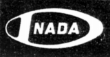
1962年の「無線と実験」誌の広告に登場。詳細は不明。東京の「稲田通信工業�梶vの製品。当時の最大のイヤホーンメーカを名乗っている。
SH-621
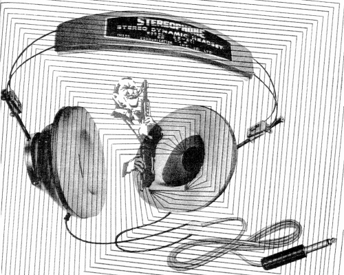
■価格 2,300円
■型式 ダイナミック型
■振動板
■インピーダンス
■再生周波数帯域 25-17,000Hz
■許容入力 500mW
■感度
■コード 2.5m
■重量 300g
■発売 1962年頃
■販売終了
■備考 特注により20kΩ版まで対応
マコト商会
1967年の「ステレオ」誌の新製品コーナーに登場。詳細は不明。「DH」型番のヘッドフォンを作っていた。
DH-02
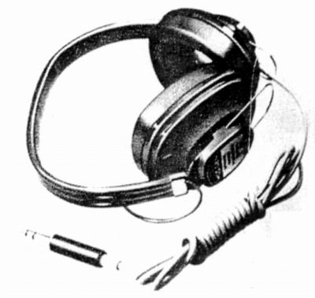
■価格 3,000円
■型式 ダイナミック型
■振動板
■インピーダンス
■再生周波数帯域 20-12,000Hz
■許容入力 200mW
■感度
118ｄB/mW
■コード 1.5m
■重量 300g
■発売 1967年頃
■販売終了
■備考 このブランドの普及機
DH-03
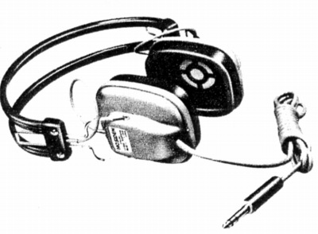
■価格 3,300円
■型式 ダイナミック型
■振動板
■インピーダンス
■再生周波数帯域 20-18,000Hz
■許容入力 300mW
■感度
108ｄB/mW
■コード 2m
■重量 350g
■発売 1967年頃
■販売終了
■備考 このブランドの中級機
使用ユニットが特別設計だそうだ。
DH-04S
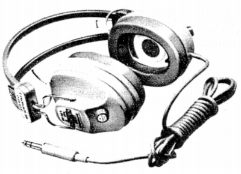
■価格 5,800円
■型式 2ウェイ・ダイナミック型
■振動板 低音＝80�o/高音＝40�oコアキシャル
■インピーダンス
■再生周波数帯域 20-20,000Hz
■許容入力
300mW
■感度
105ｄB/mW
■コード 2.5m
■重量 400g
■発売 1967年頃
■販売終了
■備考 このブランドの上級機
高音調整用アッテネーター内蔵。
エコー
1968年の「ステレオ」誌の新製品コーナーに登場。エコー電子�鰍ﾌ製品。詳細は不明。本社は東京都大田区田園調布、工場は大田区北馬込だったようだ。
HS-606
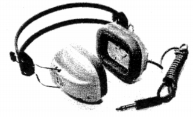
■価格 2,200円
■型式 ダイナミック型
■振動板
■インピーダンス 8Ω
■再生周波数帯域 25-17,000Hz
■許容入力
500mW
■感度
■コード 1.5m
■重量 360g
■発売 1968年
■販売終了
1970年頃
■備考 価格はメーカーの送料込みの直販価格
1971年頃の通販ヘッドフォン
1971年の「無線と実験」誌に広告掲載された通販のヘッドフォンをのせる。
5機種中3機種はメーカー不明、残りはホシデン製のようだ。
「オーディオ日本」の名称で行われており、運営していたのは「万成商事」という会社で、住所はこのページ下に収録の「万成オーディオ」と同じである。
なお価格はあくまでオーディオショプの通販価格なので、正規価格は不明。ちなみに同時に掲載されていたカートリッジなどは概ね30％オフぐらいの価格が提示されていた。なお1973年頃にはLESON （
レソーン）のコンデンサー型を扱っていた。
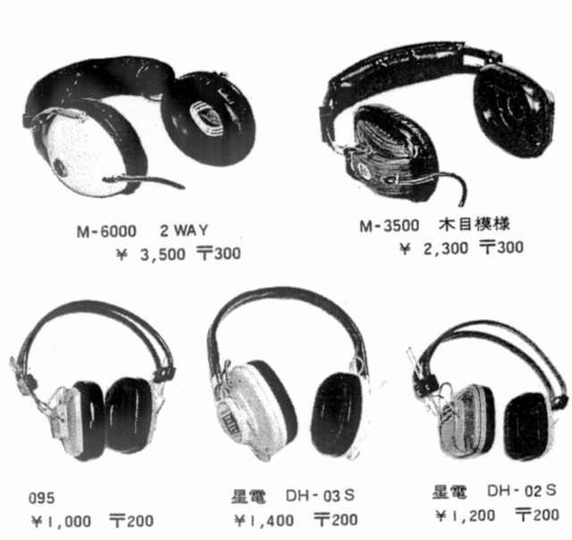
マエデン
1972年の「電波科学」誌の4チャンネルヘッドフォンの記事に登場。２ウェイ型ヘッドフォン流用の4チャンネルヘッドフォンの例として紹介されていた。そのヘッドフォン自体のスペックは不明。「MD」型番のヘッドフォンを作っていた。一度ネットオークションでこのブランドの「MD-803ADS」というヘッドフォンをみたことがある。また、CDジャーナルのヘッドフォンブック2009で豊永尚輝氏が、兼松家電�叶ｻのヘッドフォンに「MAEDEN」と入ったコードが使われていると記述している。
MD-401B
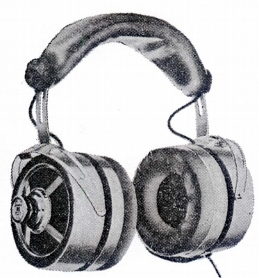
■価格
■型式 ダイナミック型4チャンネルヘッドフォン
■振動板
■インピーダンス
■再生周波数帯域
■許容入力
■感度
■コード
■重量
■発売 1972年頃？
■販売終了
■備考
BRAUN（ブラウン）
HifFi STEREO GUIDE 1974-75 に「KH1000」という機種が価格未定で記載されている。輸入元はブラウン・エレクトリック・ジャパンとなっていた。次のHifFi STEREO GUIDE 1975 では記載されていない。同名のヘッドフォンが1960年代製というふれこみでしばしばネットオークションに登場するが、同一機種かは不明。少なくともインピーダンスや再生周波数帯域などのスペックはオークションのものと一致する。
KH1000
（画像なし）
■価格
■型式 ダイナミック型
■振動板
■インピーダンス 400Ω
■再生周波数帯域 16-20,000Hz
■許容入力
400mW
■感度
■コード 3m
■重量 450g
■発売 1974年頃？
■販売終了
■備考
WHARFEDALE（ワーフェデール）
イギリスのスピーカーメーカー。このメーカーのID1という機種が世界で最初に動電全面駆動型ヘッドフォンを商品化したものとされる。海外サイトを検索すれば実機の画像を探せるだろう。当時の代理店、三洋によって1975年頃輸入予定とされたが、実際にヘッドフォンが輸入されたかは不明。当時の記事の内容をみる限りにおいて、ヤマハのオルソダイナミック型やフォステクスのRP型に比べ、完成度は低いものと思われる。磁石にフェライトではなく、ゴム磁石を使用となっていた。ゴム磁石はフェライトより加工性は優れているが、磁力は弱い。
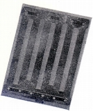
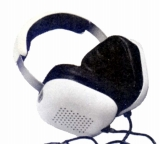
上記は73年頃の記事で紹介された振動板と75年頃の記事でのヘッドフォンの画像。当時の記事では「E-1500」という名称で紹介されていたが、三洋＝OTTO風の型番であり、三洋によるライセンス生産か、OEM調達する予定があったのかもしれない。海外サイトで見かける「ID1」に酷似している。またID2という動電全面駆動型機種がある。
ITT SCHAUB-LORENZ（ITT シャウブ ローレンツ）
ドイツのオーディオ・メーカー？。1970年代中頃にスピーカーやカセットテープデッキが輸入されていた。同時の代理店はジェー・アンド・ジー。当時流行していた生録対応で「72G」というモデルが紹介されていたが、このデッキはステレオマイクとヘッドホン付きで\39,000で販売されていた。これは当時の国産の同クラスの製品の大半より安い（例 ソニーのTC-2890SDが\79,800)。
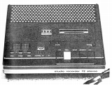
(72G）付属のヘッドフォンは型番等は不明だが、他に重複するモデルが当サイトにないため、収録する。
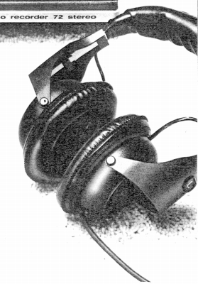
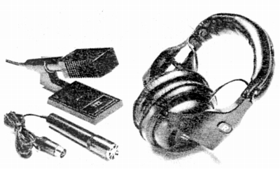
支持アームは異なるが、全体的にナカミチのHF-100に似ている。
MANSEI AUDIO（万成オーディオ）
1981年の「オーディオアクセサリー」誌に広告を掲載していたモデル。会社所在地は千代田区神田佐久間町となっていた。小型軽量機流行の時代の前期の製品であり、スポンジイヤパッドを持つがプラグは標準サイズ。
ST-30
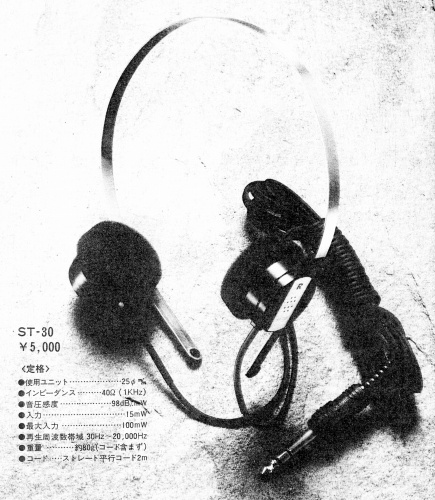
■価格 5,000円
■型式 ダイナミック型
■振動板 25�o
■インピーダンス
40Ω
■再生周波数帯域 30-20,000Hz
■許容入力 100mW
■感度 98ｄB/mW
■コード 2m
■重量 約80g（コード含ます）
■発売 1981年頃
■販売終了
■備考
TAPEX（電気堂）
1980年から、比較的廉価なAV関係のアクセサリーを販売していたブランド。母体企業の�鞄d気堂は、ネットの情報によれば、元々TDK系の子会社だったそうであるが、すでにTDKマーケティングに吸収され、現在では存在しないそうだ。アクセサリーの一貫として、ヘッドフォンも販売していた。
MHP-200
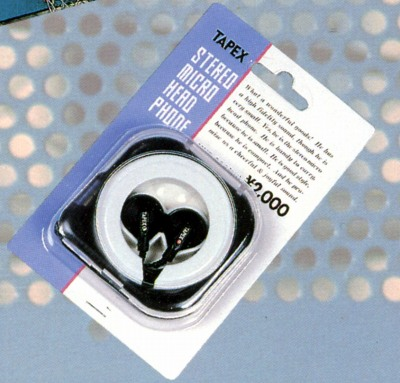
■価格 2,000円
■型式 ダイナミック型
■振動板
■インピーダンス
32Ω
■再生周波数帯域 50-20,000Hz
■許容入力 50mW
■感度
■コード 1.2mウレタンリッツ線L型
■重量
■発売 1987年頃
■販売終了
■備考
1987年度カタログに記載のモデル
カラーはブラック、ブルー、グリーン、イエロー、
オレンジ、ピンク、ホワイトがあった。